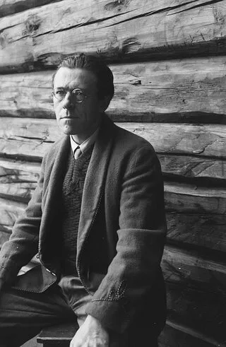
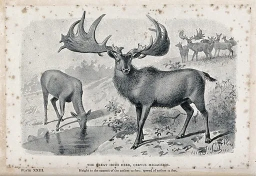
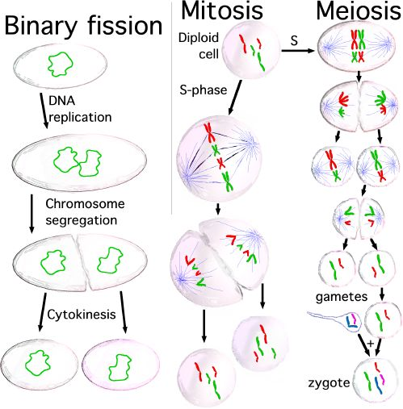

Disclaimer: I wrote this a while ago, and it does not reflect my current mindset. Well, basically I just have a more nuanced position on this though I don’t entirely disagree with what is written here. I think its nice to catalog old writings of yours.
Pessimism has always been a paradoxical force in my life. Something about the depths of hopelessness motivates me. Allowing existential terror into my soul puts me in a somewhat pensive but reflective mood. Whenever I need a work ethic boost, I usually turn to the works of pessimistic writers to get my creative wheels turning. I take pride in being one of the weird few where this occurs.
One of my recent go-to sources of inspiration is examining my own personal experiences through the lens of Peter Wessel Zapffe. Zapffe was a Norwegian philosopher who wrote about pessimistic philosophy in the early 20th century, before the times of more famous existentialists such as Sartre and Camus.

Zapffe’s masterwork is his essay “The Last Messiah,” originally published in 1933. If you would like to read it, the online version can be found here. It’s only roughly four pages in length, so I highly recommend it if you want to indulge in a pessimism-filled fantasy.
Unfortunately, Zapffe’s complete treatise in which he fully develops all his thoughts, On the Tragic (1941), has never been translated from Norwegian. This translation has been close to being finished for decades now. I have more hope that we will obtain efficient translation machines for Norwegian philosophy before we get the human-made translation. For now, we will just assess “The Last Messiah,” his most well-known work.
To be honest, I often find pessimism to be more about texture than substance. Pessimists tend to rely on emotional appeal rather than reason in many cases. However, some might argue that this is intentional, as it can be difficult to indulge a pessimistic argument without adopting their worldview.
At the very least, this quality makes pessimists entertaining to read. When you are having a bad week, nothing validates you quite like reading how horrible existence is. Trying to rationalize your miserable life with pure reason isn’t always appealing. Short, analytical sentences just aren’t that sexy.
Allow me to wax Zapffe for a moment. Pessimists, serving as the contrarian, use esoteric vocabulary to create a phantasmagoric landscape in the reader’s skull. This approach may be unproductive, but the pessimist would argue that human comprehension is dismal, and using dreary languages better conveys the ineffability of our existence. Only through the terms of misery may we come to understand misery.
When reading Zapffe, one cannot help but notice how he portrays the human condition with these words of misery: tragedy, punishment, redundancy, and delusion, to name a few. Whether this was done to emphasize Zapffe’s point or as a reaction to the conclusions he had reached is unclear. Regardless, it helps to paint a unique picture of human consciousness that would come to define future work in the niche community of pessimist writers.
“The Last Messiah” explores human consciousness and our existential dread, as well as our self-conceptualizations of existence. Zapffe’s argument is unique in that it attempts to explain these concepts through an evolutionary lens. However, it’s important to note that this was written well before modern understandings of consciousness and evolutionary psychology, which should be taken into account when considering the context for which this argument was written.
According to Zapffe, human consciousness was a byproduct of evolutionarily beneficial traits, which made humanity successful in the game of natural selection. The negative side effects of consciousness, such as angst, dread, and confusion, weren’t enough to prove detrimental to our reproduction. Because of this, we are now stuck dealing with self-awareness in the face of an indifferent and absurd universe.
This was never part of the plan, but it wasn’t a big enough of an issue for the human mind not to be selected for over time. So we are stuck as beings he describes as “over evolved.”
Zapffe argues that having to deal with these feelings and experiences is simply the price we paid for evolving consciousness. The persistent belief that there must be more to life and that we need explanations for ourselves and the cosmos is just an undesirable evolutionary byproduct. Due to our natural instincts, we often become misguided by these beliefs.
This is what Zapffe refers to as the “paradox” of man. Humanity is the only species that is so acutely aware of its own existence that it has become a liability to itself. We are conscious that we exist without intrinsic meaning, yet we also know that we will die without any explanation or justification for our existence and sufferings. The struggle of being human is therefore a struggle to find a solution to the suffering that has befallen us.
But these perceived issues were never anything more than a consequence of our evolution, just like how walking upright had caused back pain for us and our ancestors or how our large craniums caused painful childbirth.
The “paradox” is that our own biological creation has caused us to despise this method of becoming.
Zapffe’s primary rhetorical tool is the allegory of the Irish elk, an extinct species of deer that had the largest antlers in deer history. Zapffe remarks how these deer succumbed to their own biology. The antlers served some positive purpose to be evolutionarily selected for but also served as a burden to the deer, who had to carry the physical weight. Eventually, the antlers became too large and became more of a detriment than a benefit. If the Irish elk’s antlers had not evolved to be so large, they might not have died out.

Now humans find themselves in a similar situation. We have evolved an overdeveloped consciousness that has become a hindrance. Zapffe thinks it could be our undoing. From an evolutionary perspective, what is suicide other than a complete biological failure?
Stepping aside for a slight tangent, I personally take issue with Zapffe’s allegory here because antlers are a sexually selected trait, which even Darwin noted often works at the expense of the animal’s survival. So it surprises me that a self-stated naturalist would use antlers as an example. Moreover, the Irish elk’s extinction was likely caused by multiple factors. After all, the Irish elk was only one of the many animals who died out during the end of the Pleistocene era. Not to mention that only the bucks bore antlers. To be fair to Zapffe, he probably based his argument on the popular conception of the elk’s fate at the time.
The next part in the essay has Zapffe questions why human consciousness hasn’t become our undoing. He goes on to describe four natural defense mechanisms that humans have developed as coping responses to self-awareness.
The first coping mechanism is what he calls isolation — a fully arbitrary dismissal from consciousness of all disturbing and destructive thought and feeling. This amounts to dodging the question or a best to not think about it mindset. Zapffe says how this can become a societal practice as society can also isolate certain ideas by sterilizing our surroundings with ideas of death.
Zapffe calls the second coping mechanism anchoring, which involves focusing on a “bigger” idea that can help individuals replace their own existential anguish with something they have deemed more important. Examples Zapffe gives include religion, ideology, morality, law and order, humanitarianism, the future, or any other outlet that provides a sense of fixation. They all ultimately release us from the pains of innate existence.
The third coping mechanism is distraction, which limits attention to the critical bounds by constantly enthralling it with impressions. Examples of these distractions include jobs, entertainment, or any other activity that consumes one’s time instead of contemplating their lives. Zapffe notes that this method is very popular, especially among high society, and dubs it “high society’s tactic for living.”
The fourth and final coping mechanism Zapffe describes is sublimation, which involves transforming existential panic into another form that provides a sense of relief or validation. This is a preferred method for artists and philosophers, who dedicate their lives to sublimating the thoughts and emotions existence has left them with. In fact, Zapffe himself acknowledges that his essay “The Last Messiah” is an act of sublimation.
A crucial aspect of Zapffe’s argument is that the coping mechanisms he describes are adaptive traits that humanity had to develop to survive their over-evolved consciousness. They serve as evidence that consciousness has proven to be a liability that we needed to protect ourselves against. As an example in nature, a giraffe’s height is advantageous for eating leaves from tall trees, but it had to adapt behaviors to overcompensate, like awkwardly splaying its legs to drink from a pool.
Zapffe cautions against assigning too much importance to behavioral traits that have come about for the sake of our own protection. Our desire to fixate on important, elevated concepts to explain our existential dread is just an evolutionary backstopping measure, similar to our bodies’ natural instinct to break our fall with our arms if we were to trip. These psychological instincts are illusions of greater significance.
Zapffe raises a final question: now that we have faced the hollowness of our coping mechanisms, what should we do? Hope for a solution is merely an instinct that our evolution over millions of years has built into us to prevent self-destruction. What Zapffe seeks is a solution that does not give in to our biological predispositions.
And like any good pessimist, the solution he derives is not a happy one.
Humanity has long passed the point of returning to an animalistic life. As long as we continue to exist, we will seek new salvations and messiahs to save us from ourselves. But the only true messiah, the last one to save us from our plight of existence, will appear and say, “there is one conquest and one crown, one redemption and one solution. Know yourselves — be infertile and let the earth be silent after ye.”
Zapffe’s solution is antinatalism — the refusal of procreation. Natural selection cursed us to become existentially awakened and deluded us into believing in purpose. However, it only cared about the preservation of the genome and was content to feed us lies to keep us breeding. The only act we can do to overcome our nature is to refuse to play this game.
To understand Zapffe’s argument, it’s like imagining being eternally tortured with no avenue of escape. Any reason to cope and carry onwards with the torture would not foil the torturer. The torturer is getting paid just by being there, and any internal reasoning to continue onwards would only make them happy. The only way to win over the torturer is to die and prevent the torturer from gaining anything more.
In this sense, our DNA’s proclivity for reproduction is what is torturing us by the continuation of an existentially suffering species. It tells us what we want to hear to keep us alive and make babies that will grow up and suffer still. What we must do, Zapffe is saying, is end this cycle of abuse.

There are several potential objections to Zapffe’s argument. One might wonder if the natural selection-inclined solutions to the problem are actually wrong. Just because they are defense mechanisms does not mean they lack inherent meaning. Additionally, it is unclear whether Zapffe sufficiently justifies why we should deny our evolved natural instincts.
Either way, my goal is not to debate this idea but deliver what I think is a super weird and morbid vision of reality. It’s such an interesting take that only pessimists could come up with, and it’s given me a lot of food for thought about how I conceptualize myself and my potential children.
In conclusion, this blog post has served its purpose of sublimating my thoughts. So, biology, you’ve won again!
Allow me to finish with a final pessimist’s consideration. Inevitably, the human race shall perish. Will the last vestiges of our species cling desperately to their fading breaths, dragging their fingernails on the walls of unyielding survival? Or shall they opt for dignity and depart on their own volition? Only those who stand during the ultimate hour will know, but make no deception: self extinction can always be a choice.